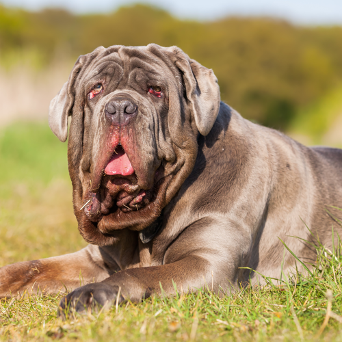
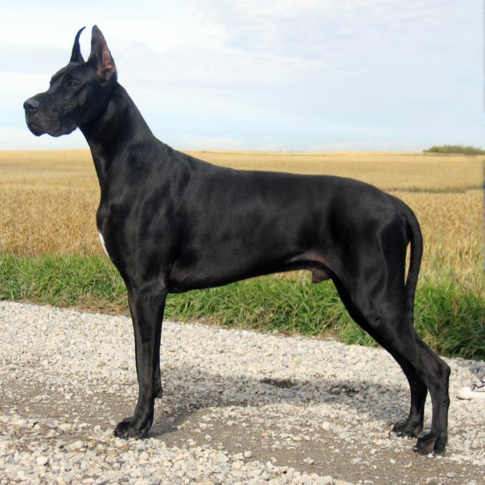
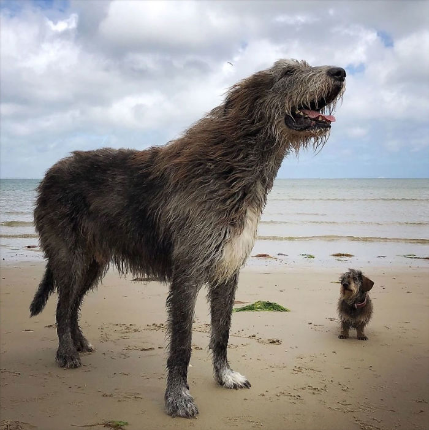

| Imagem | Raça | Descrição |
|---|---|---|
|  | Mastiff Napolitano |
A maioria das pessoas considera o Mastiff o maior cachorro do mundo. Estes cães são capazes de alcançar 100 kg quando adultos e alguns podem passar de 81 cm de altura. O Mastiff é freqüentemente encontrado descansando no sofá com seu dono, se o dono é capaz de sentar com eles. |
|  | Dogue Alemão |
São cachorros leais e muito brincalhões, mas permanecem delicados suficientemente para estar em torno de pequenas crianças. Na média, a altura é entre 70 e 76 centimentros e em geral aparentam um pequeno cavalo. Seus filhotes tendem a ser um pouco desajeitados pelo crescimento rápido. |
|  | Lébrel Irlandês | Um grande cão de família que certamente manterá os estranhos longe do quintal, trata-se do gigante lébrel irlandês. Este é o cão de raça muito alto, chegando a aproximadamente 81 cm de altura para o macho e 76 cm para fêmeas. Eles são bastante leves, e pesam apenas em torno de 50 kg em circunstâncias normais quando crescidos. |